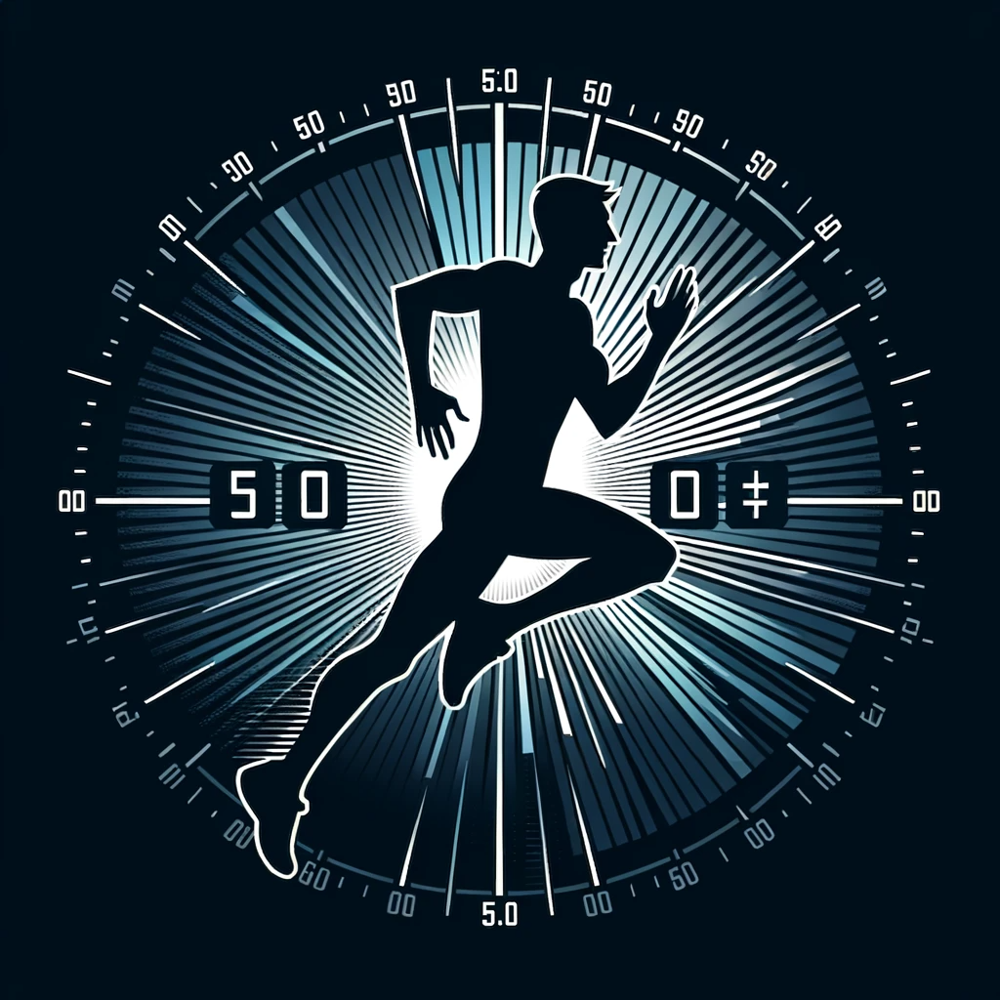

Running Pace Calculator
Time hours:
minutes:
seconds:
Total Distance (km):
Select predefined distance
Marathon
Half Marathon
100 miles
50 miles
2 miles
1 mile
Results:
Equivalent Times
The calculator uses a Python script to round the pace needed to complete the distance to the nearest integer